Introdução à Informática
Do ábaco à era moderna: história, máquinas e conceitos
Técnico em Meio Ambiente · 1º Módulo · 2026/2
Prof. Diego Cordeiro de Oliveira
Instituto Federal do Piauí
Promover uma educação de excelência, direcionada às demandas sociais.
O que vamos explorar hoje?
1. Histórico dos computadores
Aprenderemos sobre as origens e os primeiros conceitos que moldaram a computação.
2. Dispositivos e máquinas pioneiras
Descobriremos os primeiros dispositivos de cálculo e os computadores eletrônicos iniciais.
3. Componentes e conceitos-chave
Exploraremos a evolução dos componentes e entenderemos bits, bytes e sistemas numéricos.
4. A era moderna e o futuro
Analisaremos a jornada do mainframe até as tendências atuais da tecnologia.
Como eram os computadores no início?
Os primeiros computadores eram enormes máquinas que ocupavam salas inteiras, consumiam muita energia e tinham capacidade de processamento limitada se comparada aos padrões atuais.
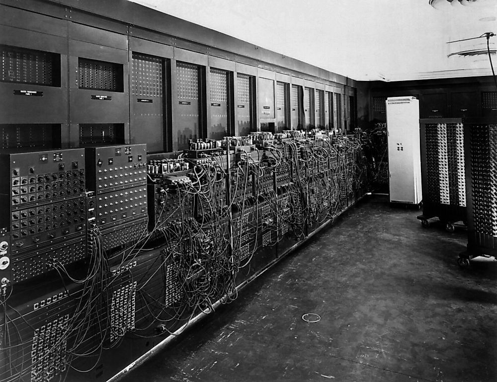
De onde vem a palavra "computador"?
Do latim computare — calcular ou contar. Inicialmente referia-se às pessoas que realizavam cálculos matemáticos.
Com o tempo, o termo passou a designar as máquinas que automatizavam os cálculos, evoluindo para os dispositivos eletrônicos que conhecemos hoje.
Para que serviam
Eram utilizados principalmente para cálculos científicos e militares — uma operação complexa que exigia conhecimentos técnicos específicos.
O que a sociedade pensava (e errou)
E as previsões continuaram…
"Não há nenhuma razão para que alguém queira ter um computador em casa." — Ken Olson, presidente e fundador da Digital Equipment Corp., 1977. Antes disso, a Atari e a Hewlett-Packard recusaram investir no projeto de Steve Jobs: a HP alegou que ele "nem havia terminado a faculdade".
Benefícios da tecnologia no nosso cotidiano
Comunicação
Facilidade de comunicação instantânea com pessoas em qualquer parte do mundo, através de dispositivos conectados à internet.
Educação
Acesso a informações e conhecimento de forma rápida e democrática, possibilitando o aprendizado contínuo.
Saúde
Avanços em diagnósticos, tratamentos e monitoramento de pacientes através de tecnologias médicas avançadas.
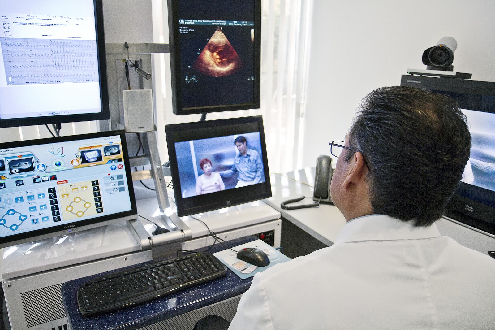
No nosso cotidiano
A tecnologia aproxima pessoas, amplia o acesso à informação e leva serviços essenciais — como a saúde — a quem está distante.
Foto: Intel Free Press · Wikimedia Commons · CC BY-SA 2.0
Os computadores eram pessoas
Antes das máquinas, calcular era um trabalho humano — e foi assim que a computação começou. Assista ao episódio da série Saga dos Computadores:
Vídeo: Manual do Mundo · #SagaDosComputadores Ep.1 · youtube.com/watch?v=xajcV4lwY3Q
Primeiros computadores eletrônicos
| Ano | Máquina | Características |
|---|---|---|
| 1943 | Colossus | Sob liderança de Alan Turing, o governo britânico criou máquinas para decifrar os códigos de Hitler. Cada máquina usava 2.000 válvulas eletrônicas no lugar de relés eletromecânicos. |
| 1944 | Mark I | Primeiro computador eletromecânico, construído por Harvard com US$ 500 mil: 15 m de comprimento, 2,5 m de altura, 760.000 peças e 800 km de fios. Soma em 0,3 s; multiplicação em 0,4 s; divisão em 10 s. |
| 1946 | ENIAC | Considerado o primeiro computador eletrônico digital de propósito geral: 27 toneladas, 167 m² e cerca de 18.000 válvulas. Fazia 5.000 adições por segundo — mil vezes mais rápido que o Mark I. Essencial para cálculos balísticos e de energia nuclear. |
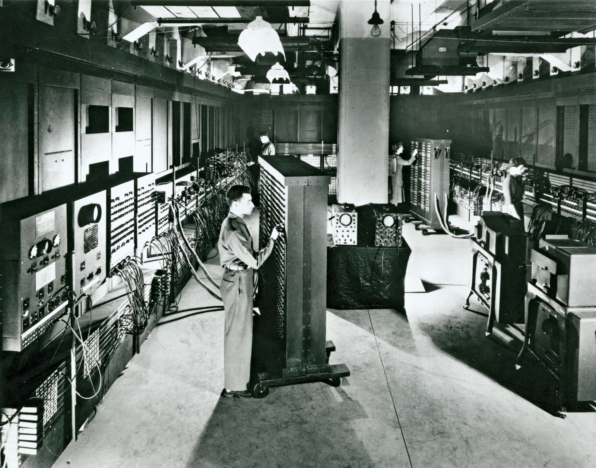
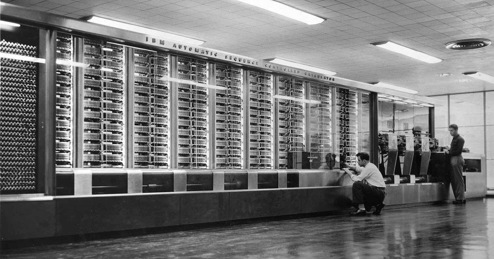
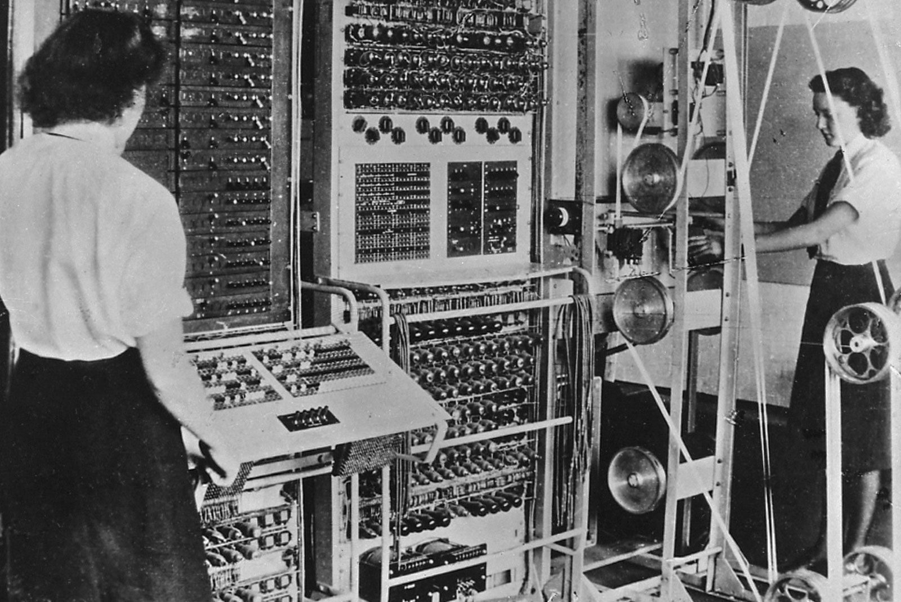
Alan Turing: o pai da Ciência da Computação
Máquina de Turing
Modelo teórico que lançou as bases para todos os computadores modernos e para a computação programável.
Quebra de códigos
Liderou a equipe britânica que decifrou o código Enigma nazista durante a Segunda Guerra Mundial, usando o "Colossus".
Inteligência Artificial
Propôs o Teste de Turing como critério para determinar se uma máquina exibe comportamento inteligente indistinguível de um humano.
Legado duradouro
Suas ideias visionárias moldaram a ciência da computação e a IA, sendo reconhecido como um dos maiores pensadores do século XX.
A era das válvulas
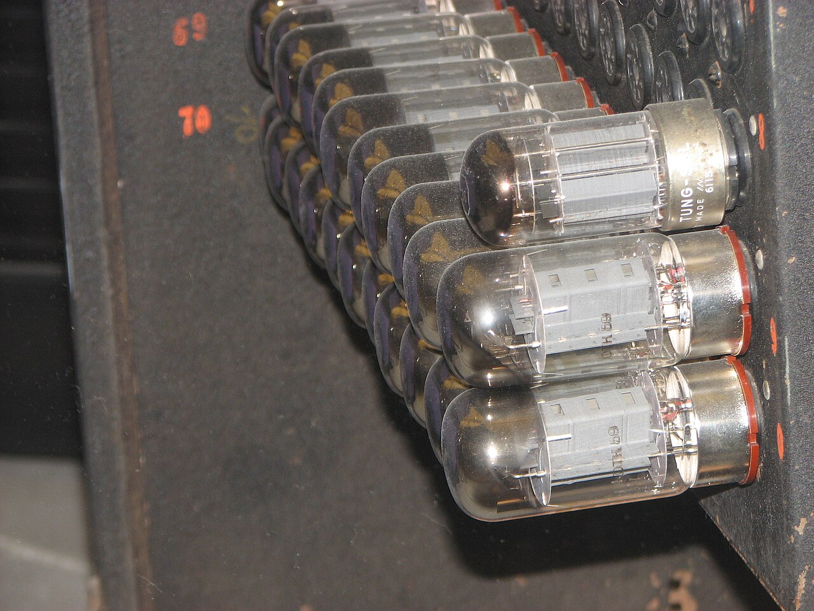
Válvulas a vácuo
Possuíam aproximadamente o tamanho de uma lâmpada elétrica. Geravam bastante calor, causando problemas frequentes. Quando paravam, não se sabia se estavam queimadas ou se era um reflexo do programa.
O ENIAC (1951-1958)
Continha 19.000 válvulas e 1.500 relés, além de resistores, capacitores e indutores. Consumia cerca de 200 kWatts de potência. Sua memória armazenava até 20 números de 10 dígitos e realizava 5.000 adições e 360 multiplicações por segundo.
Foto: Erik Pitti · Wikimedia Commons · CC BY 2.0
Compare
O ENIAC consumia 200 kW para realizar 5.000 adições por segundo. Um notebook atual consome cerca de 0,05 kW e executa bilhões de operações por segundo.
Evolução dos componentes eletrônicos
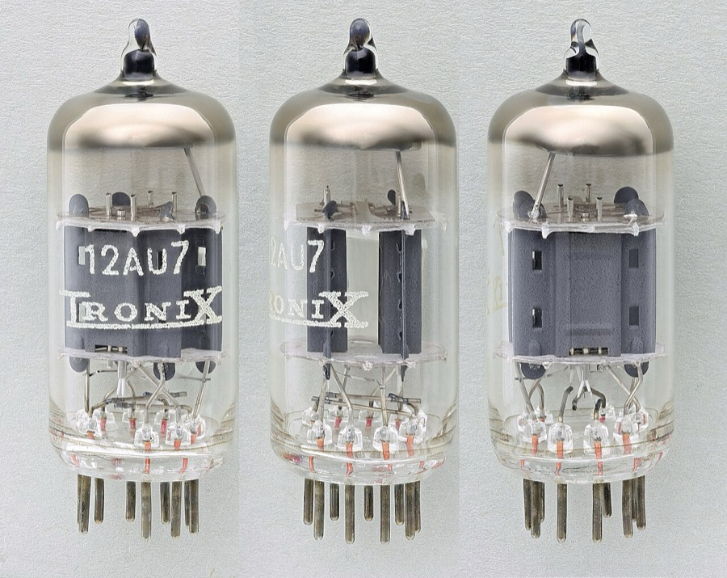
1. Válvulas 1940s
Primeiros componentes eletrônicos: grandes, consumiam muita energia e geravam muito calor.
Foto: Mister rf · Wikimedia Commons · CC BY-SA 4.0
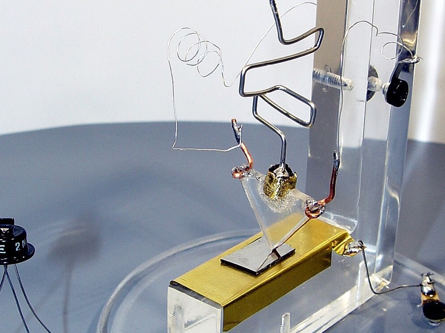
2. Transistores 1947
Desenvolvidos pela Bell Labs, eram dispositivos pequenos que transferiam sinais eletrônicos, substituindo as válvulas.
Foto: Mister rf · Wikimedia Commons · CC BY-SA 4.0
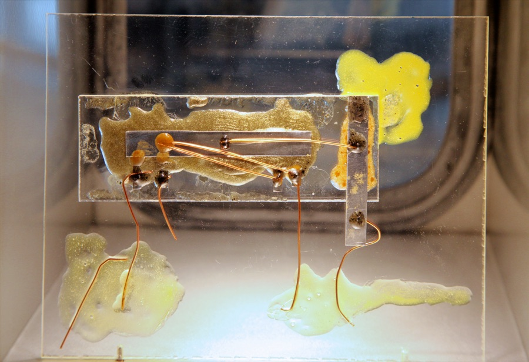
3. Circuitos Integrados 1960
A IBM lança o IBM/360 com CIs — pastilhas conhecidas como chips, que integravam dezenas de transistores em circuitos complexos.
Foto: Florian Schäffer · Wikimedia Commons · CC BY-SA 4.0
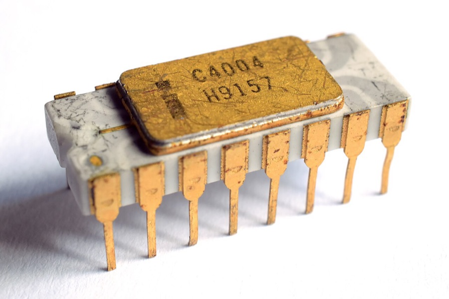
4. Microprocessadores 1971
O primeiro microprocessador comercial foi construído pela Intel: o 4004, com 4 bits, 46 instruções e 2.300 transistores.
Foto: Thomas Nguyen · Wikimedia Commons · CC BY-SA 4.0
Sistema Decimal × Sistema Binário
Sistema Decimal
- Temos 10 opções de representação numérica (0 a 9).
- Cada casa tem 10 algarismos possíveis e vale 10× mais que a anterior (unidades, dezenas, centenas…).
- Possui vários divisores inteiros, o que facilita o fracionamento: 2, 3, 4, 6, 12.
Sistema Binário
- Utiliza apenas dois dígitos: 0 e 1 (desligado e ligado).
- Perfeito para computadores, que funcionam ligando e desligando interruptores (transistores).
- Cada dígito acrescentado dobra o valor: 2, 4, 8, 16, 32, 64…
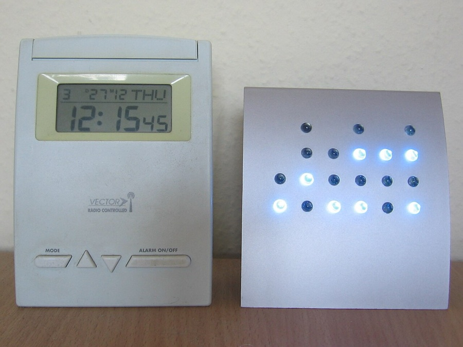
Foto: Julo · Wikimedia Commons · domínio público
Bits, Bytes e unidades de informação
| Unidade | Equivalência | Em bits |
|---|---|---|
| Bit | Menor unidade de informação em computação. Representa um dígito binário (0 ou 1). | — |
| Byte | Conjunto de 8 bits: pode representar 256 valores diferentes (2⁸). | 8 bits |
| Kilobyte (KB) | 1.024 bytes (aproximadamente mil bytes). | 8.192 bits |
| Megabyte (MB) | 1.024 KB (aproximadamente um milhão de bytes). | 8.388.608 bits |
| Gigabyte (GB) | 1.024 MB (aproximadamente um bilhão de bytes). | 8.589.934.592 bits |
| Terabyte (TB) | 1.024 GB (aproximadamente um trilhão de bytes). | 8.796.093.022.208 bits |
Bits × Bytes na prática
A velocidade de rede é medida em kbps (kilobits por segundo), enquanto o tamanho de arquivos usa kB/s (kilobytes por segundo) — daí a diferença entre a velocidade contratada e a velocidade real de download. Curiosidade: cada emoji é representado por 4 bytes, o que permite uma grande variedade de símbolos.
A evolução continua: do mainframe ao futuro
- Mainframes (1970s): computadores de grande porte, com velocidades de processamento, confiabilidade e capacidade de armazenamento ampliadas.
- Supercomputadores: máquinas que manipulam gigantescas quantidades de dados, utilizadas em pesquisa, governos e uso militar.
- Computadores pessoais: projetados para atender às necessidades de usuários domésticos, popularizando a tecnologia.
- Internet: revolução que permitiu a conexão entre computadores, hoje onipresente e impulsionada pelos smartphones.
- Futuro: computação quântica, dispositivos cada vez mais integrados e menores, e robôs inteligentes.
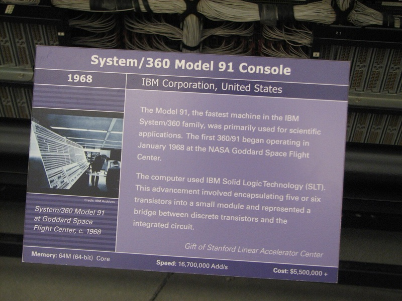
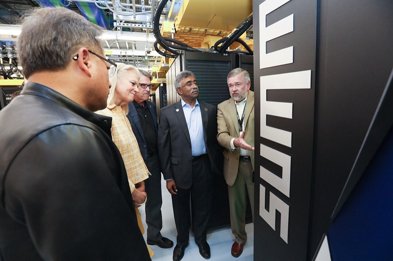
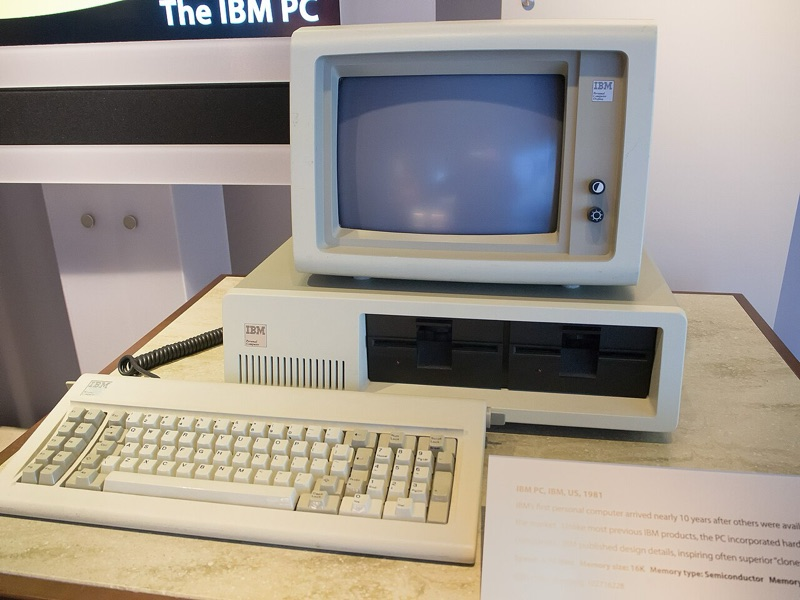
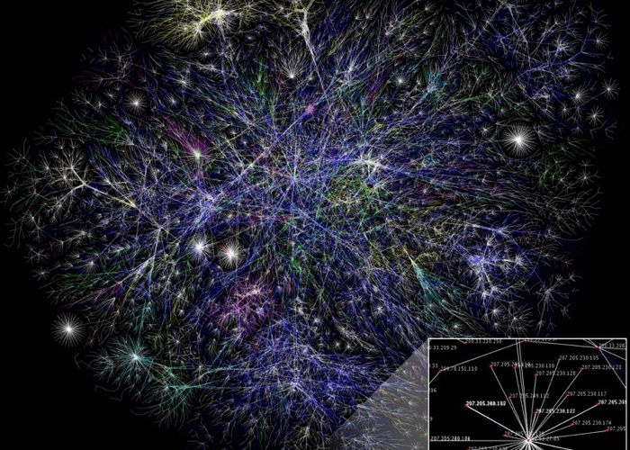
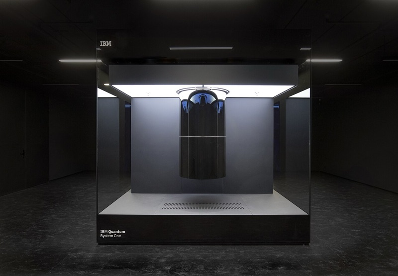
Fotos: Erik Pitti · O.R.N.L. · Ik T · Opte Project · IBM Research · Wikimedia Commons · CC BY 2.0 / 2.5
Computação quântica: o futuro já começou
O último item da nossa linha do tempo já existe em laboratório: os computadores quânticos prometem resolver em segundos problemas de medicina, energia e segurança digital que hoje levariam milhares de anos.
Vídeo: Cleo Abram · Quantum Computers, explained with MKBHD (em inglês — ative as legendas) · youtube.com/watch?v=e3fz3dqhN44
Dúvidas?
Dúvidas?
Estamos aqui para responder.
Prof. Diego Cordeiro de Oliveira — diego.cordeiro@ifpi.edu.br